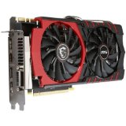

Eine Grafikkarte steuert in einem Computer die Grafikausgabe. Bei Ausführung eines Programms berechnet der Prozessor die Daten, leitet diese an die Grafikkarte weiter und die Grafikkarte wandelt die Daten so um, dass der Monitor oder Beamer alles als Bild wiedergeben kann.
